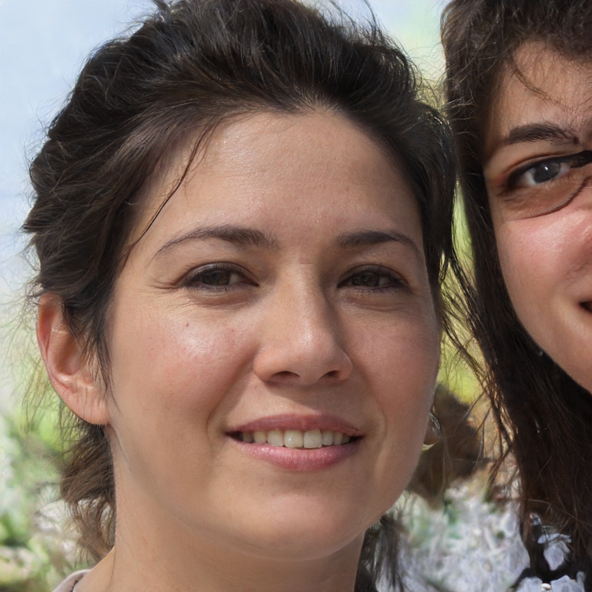

Segundo a Organização Mundial de Saúde (OMS), saúde pode ser definida como “um estado de completo bem-estar físico,
mental e social, e não apenas a ausência de doença ou enfermidades”. Sendo assim, não basta apenas estar sem nenhuma doença,
é necessário estar bem consigo mesmo e com o corpo, sem sentir dores ou até mesmo tristeza.
Para conseguir bem-estar físico, é importante estar sempre ativo através da prática de exercícios. Não há idade para iniciar as atividades físicas,
por isso, faça uma caminhada, natação ou até mesmo exercícios mais pesados, como musculação.
O importante é realizar uma atividade que gere bem-estar. Além disso, é válido ter sempre em mente que os exercícios físicos aumentam a expectativa de vida,
diminuem o estresse, além de proporcionarem mais beleza quando o assunto é estética.
A covid-19, doença causada pelo coronavírus SARS-Cov-2, é transmitida principalmente por meio do contato com pequenas gotículas que contêm o vírus e são expelidas por pessoas infectadas. Elas entram em contato com as nossas vias aéreas, e novo coronavírus pode começar a se multiplicar no nosso corpo. Portanto, o uso de máscaras é importante como medida de proteção tanto para você mesmo quanto para as pessoas a seu redor.
As máscaras funcionam como uma barreira física para a liberação dessas gotículas no ar quando há tosse, espirros e até mesmo durante conversas. Seu uso é importante principalmente em locais em que não é possível manter uma distância mínima de segurança. Apesar de sua eficácia, seu uso deve ser acompanhado de outras medidas de proteção como limpeza frequente das mãos e distanciamento físico de 2 metros de outras pessoas.
Maiara Fernandes
Com a pandemia, muitos habitos precisaram ser revistos, muita coisa mudou, mas mantive minha saude em dia seguindo passos simples.
Douglas Siqueira
A Saúde mental é algo de suma importância nesse período, estar de bem consigo mesmo é algo que abre portas para diversas atitudes benéficas à saude.

Helena Junkes
Uma alimentação balanceada é essencial, sempre com frutas e verduras de qualidade, de preferência orgânicos, garantem uma qualidade de vida somado a atividades físicas.